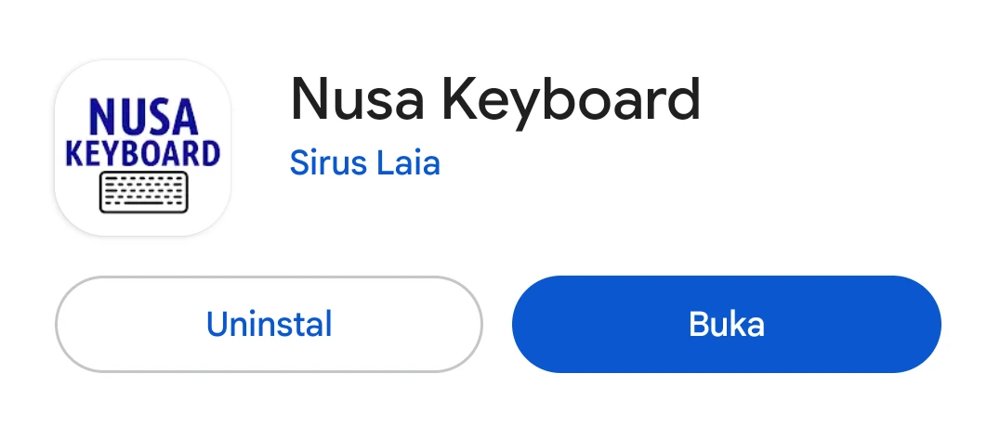
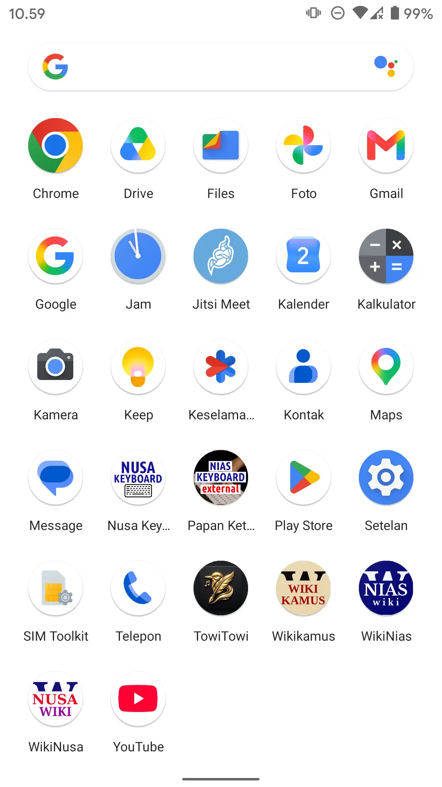
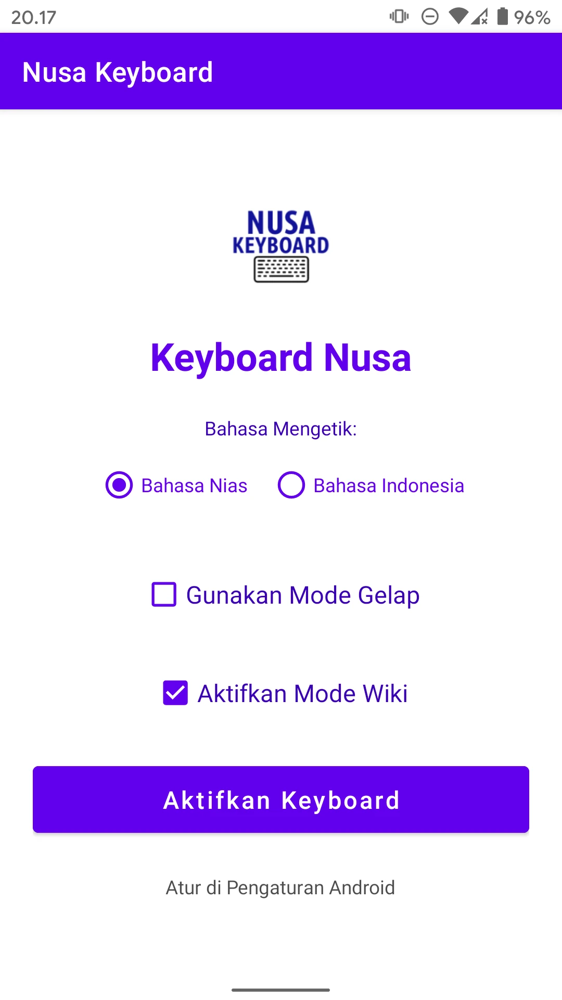
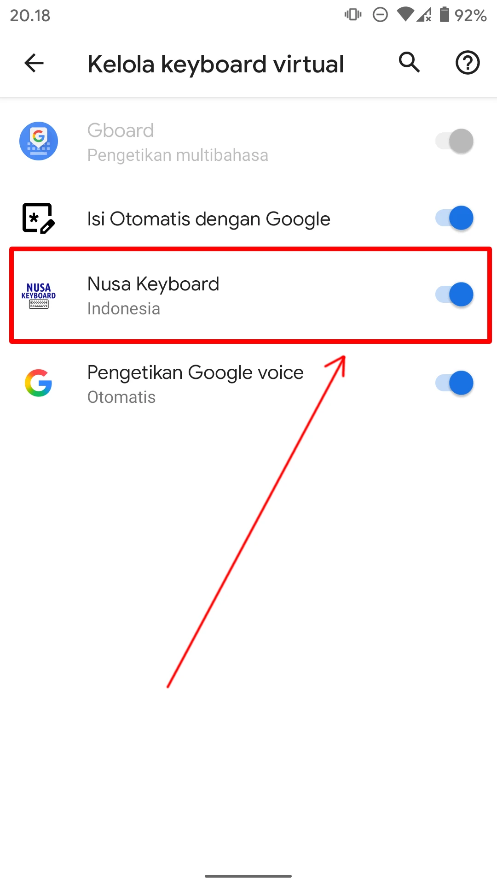
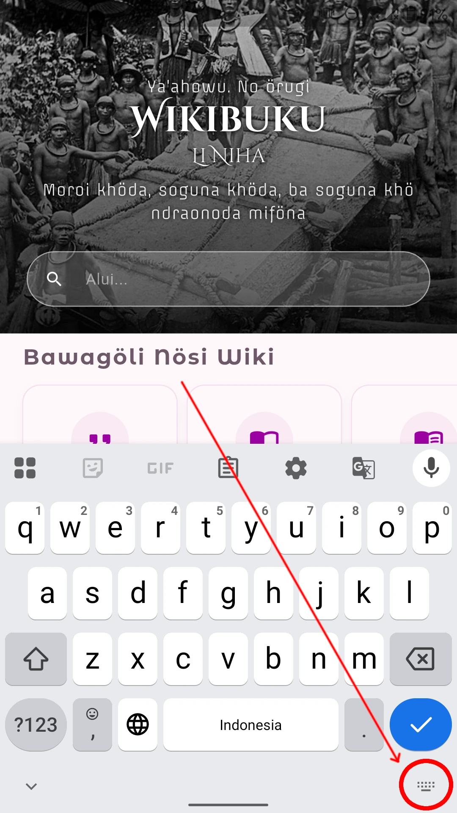
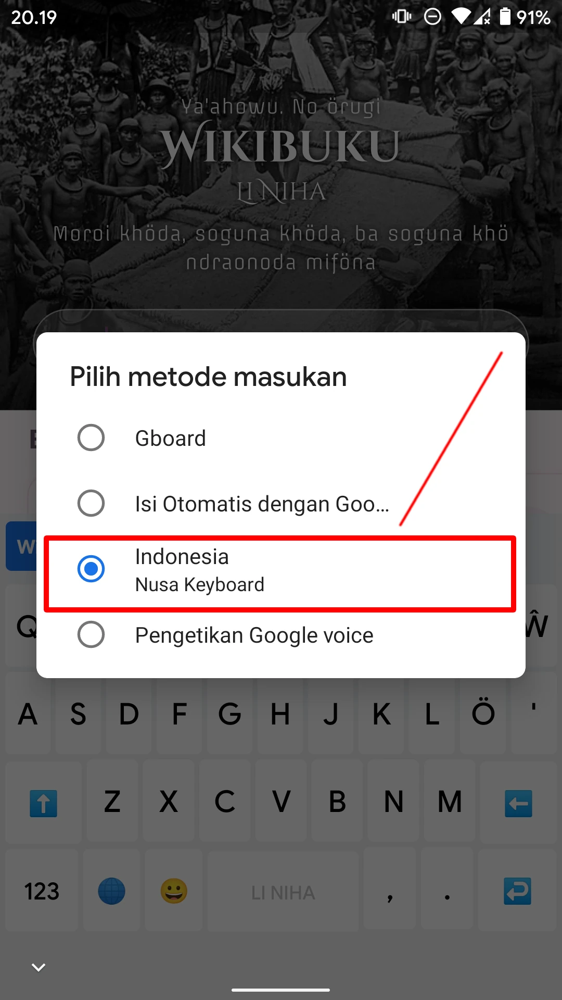
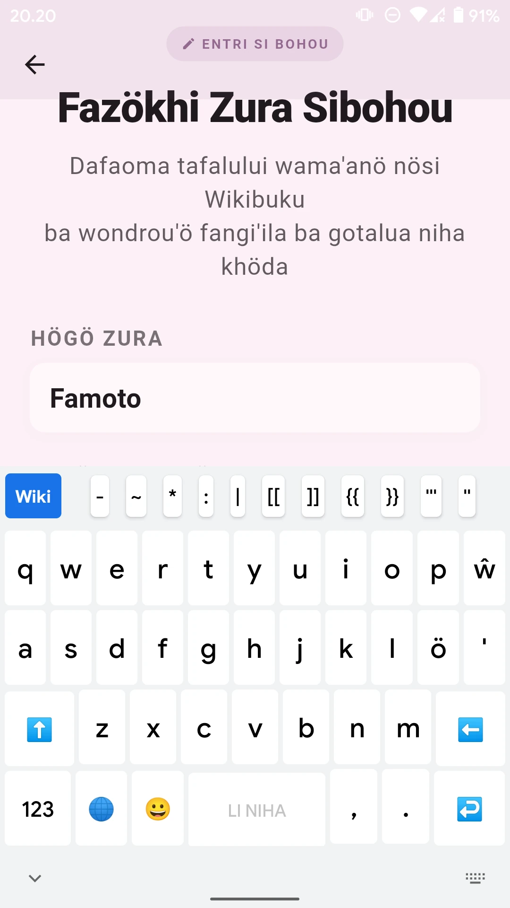

PANDUAN APLIKASI NUSA KEYBOARD
Intro
Anda ingin mengetik dalam bahasa Nias? Dengan aplikasi Nusa Keyboard bisa! Huruf ö dan ŵ telah tersedia. Anda bisa menukar papan ketik antara bahasa Nias dan bahasa Indonesia.
Selain itu papan ketik ini memiliki tombol untuk mengaktifkan kode wiki. Jadi merupakan peralatan penting buat mereka yang sering menulis di Wikipedia, Wikikamus, dan Wikibuku Nias.
Menginstal dan Mengatur Aplikasi Nusa Keyboard
-
Klik gambar badge Google Play di bawah ini untuk pergi ke Google Play Store:

-
Pastikan Anda melihat aplikasi Nusa Keyboard. Klik pada tombol "Instal". Tunggu sampai selesai dan Anda melihat tombol biru "Buka".

Nusa Keyboard telah terinstal -
Anda bisa langsung menjalankan aplikasi dari sini dengan mengetuk tombol BUKA atau Anda pergi ke laci aplikasi smartphone Anda dan mengetuk ikon Nusa Keyboard di sana.

Nusa Keyboard di laci aplikasi -
Anda akan melihat halaman Pengaturan papan ketik. Klik pada tombol AKTIFKAN KEYBOARD.

Halaman Pengaturan Nusa Keyboard -
Anda melihat daftar berbagai papan ketik yang telah terinstal di smartphone Anda. Aktifkan Nusa Keyboard.

Nusa Keyboard Aktif - Selesai. Anda siap menggunakan Nusa Keyboard untuk mengetik.
Menggunakan Papan Ketik Nusa Keyboard
- Jalankan aplikasi penulisan seperti WikiNusa.
-
Klik di kolom pencarian atau kolom teks, yang secara otomatis menampilkan papan ketik default (bawaan) yang aktif saat ini. Klik pada ikon menukar papan ketik (keyboard switcher, biasanya ikon keyboard di bilah navigasi bawah kanan atau di menu notifikasi).

Klik ikon menukar papan ketik -
Pilih/klik pada pilihan Nusa Keyboard untuk mengaktifkan papan ketik Nusa Keyboard.

Memilih papan ketik Nusa Keyboard -
Sekarang Anda siap mengetik dalam bahasa Nias.

Papan ketik Nusa Keyboard - Klik di ikon globe pada Nusa Keyboard untuk bergonta-ganti layout papan ketik antara layout bahasa Nias dan layout bahasa Indonesia secara cepat.